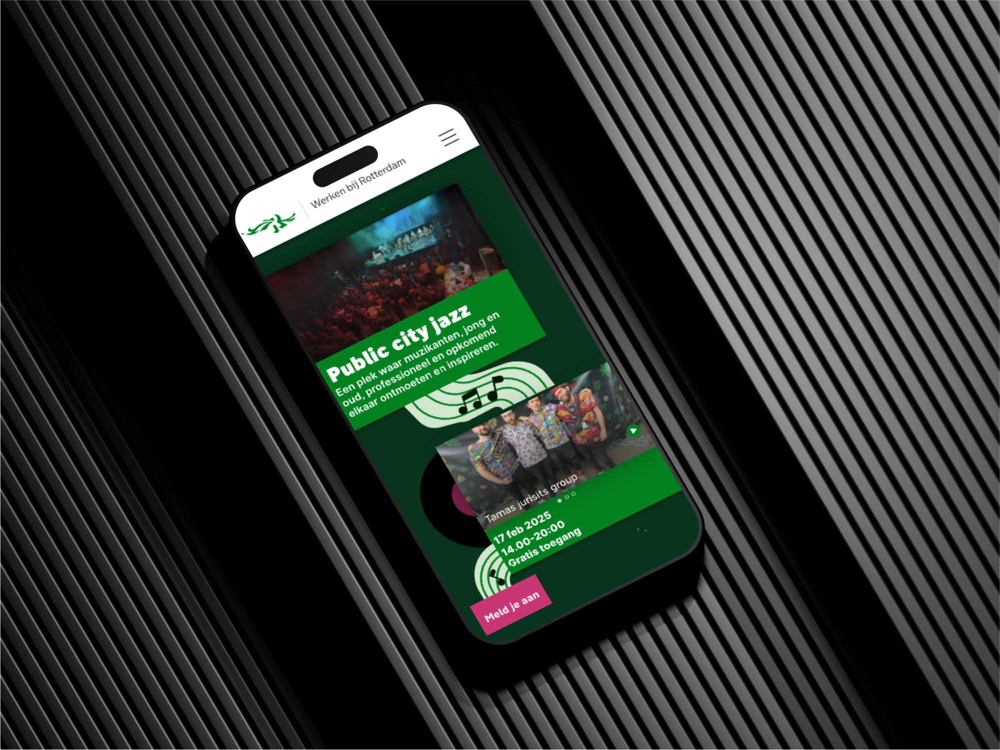
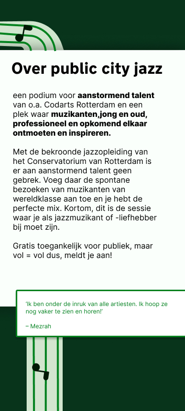
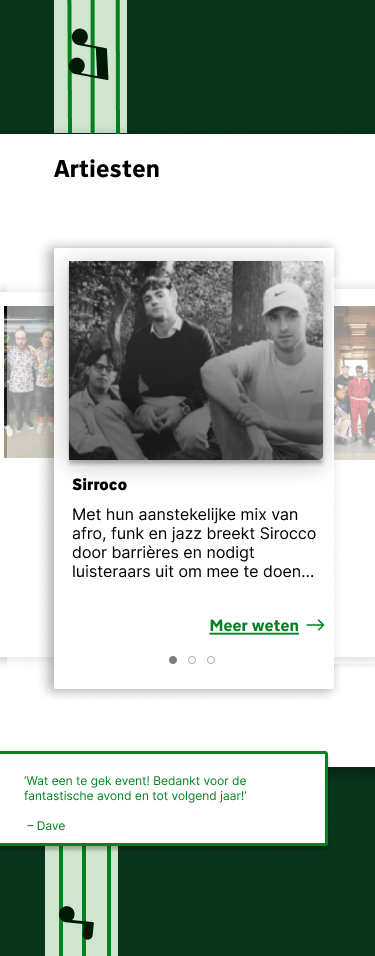
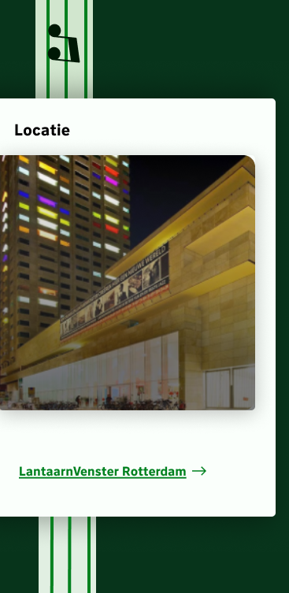
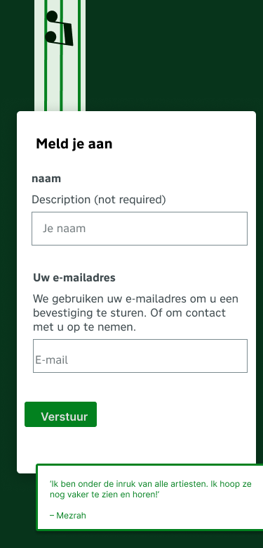
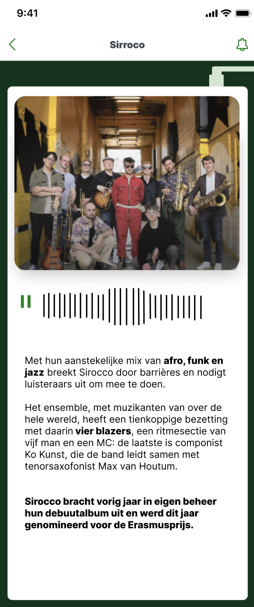

Public city jazz
De one pager voor Public city jazz voor jazz liefhebbers
over de opdracht
De fictieve opdracht "gemeente Rotterdam" organiseerd een event voor jonge artiesten en bandjes die ze promoten bij de muziekopleiding.
Het doel was om een een aantrekkelijk huisstijl gecombineerde onepager te maken.
probleem statement
De ongepager moet de gebruiker gemakkelijk door de one pager heen leiden. En een muziek luister feauture hebben die de gebruiker makkelijk meeneemt.
Mijn rol
- UI-design
- Conceptontwikkeling
- Interfaceontwerp
- UX-design
- functioneel onwtwerp
- Huistijl
- Substijl
- Doelgroepgericht
- Gebruikerservaring
- Innovator
- Brainstorming
extra functie
De muziek luister functie heb ik op de home pagina geplaatst zodat de gebruiker gelijk de kans krijgt te interacteren. hiervoor heb ik miniamlistische een mp4 pagina gemaakt om in het oude jazz thema te blijven
Demo
Bekijk een live demo van de website of bekijk de code op GitHub:
Live Demo Bekijk op GitHubAfbeeldingen van het project




